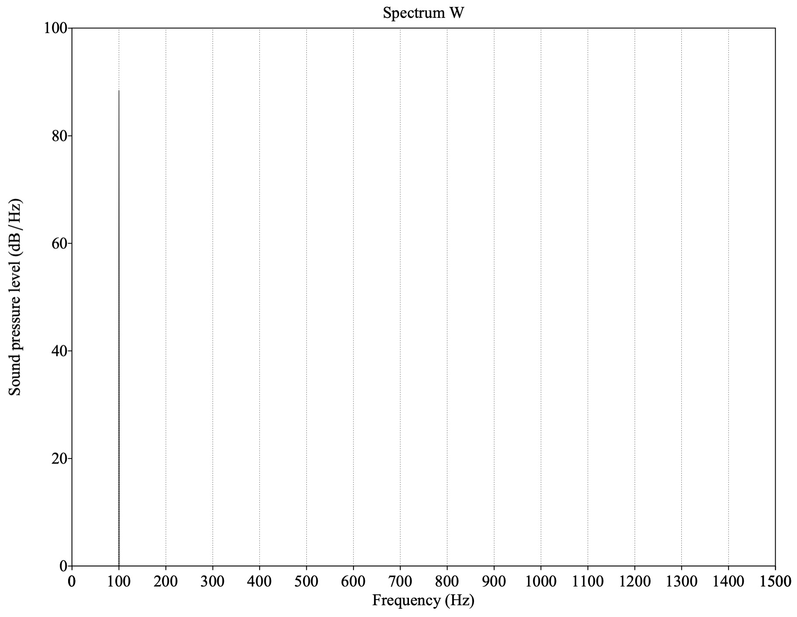
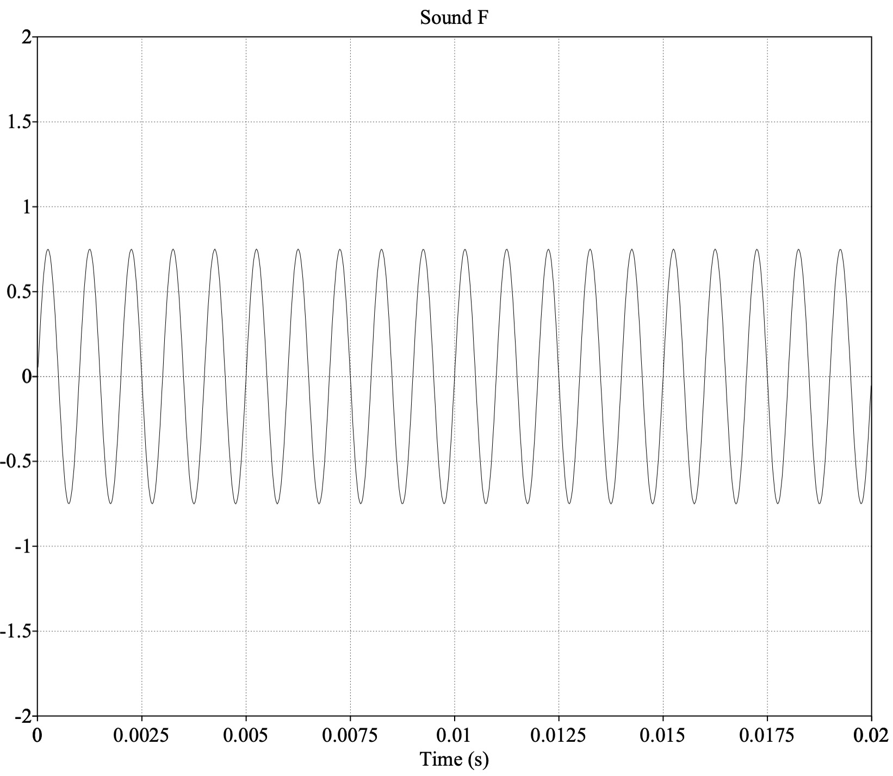
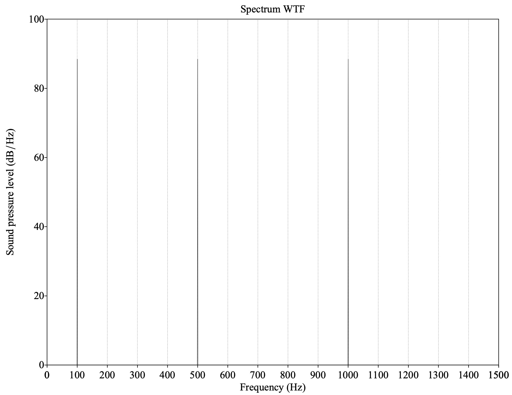

# Spectral Analysis ### Will Styler - LIGN 168 --- ### Today's Plan - What are complex sounds? - Spectral Analysis and the Fourier Transform - The Time-Frequency Tradeoff --- ### Complex Sounds are everywhere! - As we said, pure sine waves are incredibly uncommon in nature - So, we need another way to characterize these sounds beyond just 'Duration, Amplitude, Period, Frequency, Phase' --- ### Speech is very spectrally complex - The voice generates a 'fundamental' frequency and harmonics - The most important features are not single frequencies, but distributions of energy across frequencies - Just looking at the waveform is not (generally) enough --- <img class="r-stretch" src="phonmedia/noisewaveform.jpg"> --- ### Clearly, we need to do better than waveforms --- # Spectral Analysis! --- ### How do we find the many components of a complicated signal? --- ## Fourier Analysis Using a Mathematical Process called a Fourier Transform which breaks a signal down into its component frequencies at a certain time, with their phase --- ### We're going to 'blackbox' Fourier Analysis - We're not diving deep on the math - We're not going to go into the difference between Discrete Fourier Analysis and Fast Fourier Analysis - We're just going to tell you what it is, how it works, and what it does --- ### The Core Use of Fourier Analysis - "What frequencies make up this chunk of this signal, and what are their amplitudes and phases?" - We have a signal in the *time domain*, but we want to see it in the *frequency domain* - **Fourier analysis for speech is generally done on a *window* (chunk) of the signal** - This is a "Short Term Fourier Transform (STFT)" --- ### Windowing --- ### Windowing --- ### Then we break the wave inside the window apart into components! --- <img class="r-stretch" src="diagrams/fft_combined.png"> --- <img class="r-stretch" src="diagrams/fft_withwaves.png"> --- <img class="r-stretch" src="diagrams/fft_separated_wavefft.png"> --- ## FFT from the middle of "Noise" <img class="r-stretch" src="phonmedia/noisefft.jpg"> --- ### Fourier Transforms show us the component frequencies - It shows us the components in a *given window of the signal* - This is *much* better information for analyzing speech - So, we're going to use them all the time here --- ### Let's walk through this process in more detail --- ### Sound W - 100 Hz - Waveform <img class="r-stretch" src="phonmedia/soundw.jpg"> <audio controls src="phonmedia/soundw.wav"></audio> --- ### Sound W - 100 Hz - Spectrum  <audio controls src="phonmedia/soundw.wav"></audio> --- ### Sound T - 500 Hz - Waveform <img class="r-stretch" src="phonmedia/soundt.jpg"> <audio controls src="phonmedia/soundt.wav"></audio> --- ### Sound T - 500 Hz - Spectrum <img class="r-stretch" src="phonmedia/soundt_spectrum.jpg"> <audio controls src="phonmedia/soundt.wav"></audio> --- ### Sound F - 1000 Hz - Waveform  <audio controls src="phonmedia/soundf.wav"></audio> --- ### Sound F - 1000 Hz - Spectrum <img class="r-stretch" src="phonmedia/soundf_spectrum.jpg"> <audio controls src="phonmedia/soundf.wav"></audio> --- ### What if we were to play these all at once? --- ### Sound WTF - Waveform <img class="r-stretch" src="phonmedia/soundwtf.jpg"> <audio controls src="phonmedia/soundwtf.wav"></audio> --- ### Sound WTF - Spectrum  <audio controls src="phonmedia/soundwtf.wav"></audio> --- ### That's much easier to cope with! --- ### Let's see how it works in the real world --- ### ... but what about time? - Spectra only show one 'moment' of the signal, captured by a small window --- ### "Noise" - Waveform <img width="70%" src="phonmedia/noisewaveform.jpg"> <audio controls src="phonmedia/noise.wav"></audio> --- ### "Noise" - Spectral Slice (FFT) <img width="70%" src="phonmedia/noisefft.jpg"> <audio controls src="phonmedia/noise.wav"></audio> --- ### How can we look at an entire word? --- ### Question: Why not just use a window which is the length of the entire signal? --- ## Spectrogram Displays a series of FFTs, with peaks arrayed vertically, to show changes in frequency over time --- ### "Noise" - Waveform <img width="70%" src="phonmedia/noisewaveform.jpg"> <audio controls src="phonmedia/noise.wav"></audio> --- ### "Noise" - Spectral Slice (FFT) <img width="70%" src="phonmedia/noisefft.jpg"> <audio controls src="phonmedia/noise.wav"></audio> --- ### "Noise" - Spectrogram <img width="70%" src="phonmedia/noisebbspectrogram.jpg"> <audio controls src="phonmedia/noise.wav"></audio> --- ### Sound WTF - Waveform <img class="r-stretch" src="phonmedia/soundwtf.jpg"> <audio control src="phonmedia/soundwtf.wav"></audio> --- ### Sound WTF - Spectrum <audio control src="phonmedia/soundwtf.wav"></audio> --- ### Sound WTF - Spectrogram <img class="r-stretch" src="phonmedia/soundwtf_spectrogram.jpg"> <audio control src="phonmedia/soundwtf_spectrogram.jpg"></audio> --- ### ... but this is a constant signal, what about changing signals? - Now, we have the sound varying over time - Each *window* will look a little different from the last one - This leads us to a problem called the **Time-Frequency Tradeoff** --- ### The Time-Frequency Tradeoff - "You can have detailed information about changes over time, or detailed information about frequency, **but never both at once**" --- ### Imagine your project group is stalking Will - *Please don't* - You want to know how often I go to Vons - So, you talk to your friendly neighborhood data broker --- ### The SuperStalker Pro Packages - Hourly purchase count for one day - Daily purchase count for two weeks - Weekly walk-in count for three months - Monthly walk in count for a year - **Which gives the best temporal data? Which gives the best frequency data?** --- ### Smaller windows mean better temporal resolution - You'll get more details about changes in frequency over time, but frequency itself is blurrier - This produces a "Broadband" spectrogram --- ### Larger windows mean better frequency resolution - You'll get more details about the exact frequencies present, but it's harder to see the temporal boundaries and changes - This produces a "Narrowband" spectrogram --- ### Smaller Window (Broadband) --- ### Larger Window (Narrowband) --- ### Smaller Window (Broadband) --- ### Larger Window (Narrowband) --- ### Smaller Window (Broadband) --- ### Larger Window (Narrowband) --- ### This forces you to make choices - "Does time or frequency matter more here?" - You can't have both! --- ### Let's have a bit of spectrogram fun --- ### You can have fun on your own - SpectrumView on iOS, Spectroid on Android - https://musiclab.chromeexperiments.com/Spectrogram/ - <https://borismus.github.io/spectrogram/> - Praat (which you should already have installed) --- ### We're not the only people using Spectrograms - Folks doing Sonar and Submarine Detection love them! <https://www.youtube.com/watch?v=as2QpSuGCc0> --- ### Here's a nice video on Fourier Transforms <https://www.youtube.com/watch?v=spUNpyF58BY> "But what is the Fourier Transform? A visual introduction" by 3Blue1Brown --- ### Our cochleas are doing something like fourier analysis! <img class="r-stretch" src="hearing/basilar_frequencies.jpg"> --- ### There are other ways to break signals into component parts - **Discrete Cosine Transform (DCT)** approximates the signal as a series of summed cosines - "I don't care what's really there, make me a version from fewer components" - DCT is great for *compression*, more later - **Mel-Frequency Cepstral Coefficients (MFCC)** break the signal down into an opaque matrix of numbers which express changes over time - 'Turn the signal into an opaque matrix of numbers which characterizes it' - More on this later! - **Functional Principal Component Analysis (fPCA)** allows you to find dominant patterns of variation in curves - ... but it's pretty inelegant for periodic signals --- ### We're going to spend a *ton* of time in the Spectral Domain - Most things that matter in speech show up as variations of frequency and amplitude over time - Nearly any approach to ASR or TTS will need to make use of frequency-domain information - ... and regardless, we'll need fourier analysis to evaluate the results - We'll be looking at spectrograms a fair bit this quarter! --- ### Wrapping Up - Complex waves have more than one frequency component - Fourier Analysis helps us understand the frequency components of complex signals - There's an inherent tradeoff between time and frequency knowledge in fourier analysis - Spectral Analysis is *wildly useful* for everything we're doing here --- ### For Next Time - We'll look at what speech looks like, and think a bit more about speech acoustics --- <huge>Thank you!</huge>